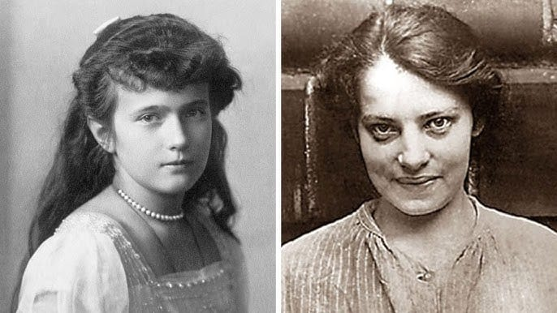

Durante casi un siglo, uno de los enigmas más persistentes de la historia moderna fue el destino de la Gran Duquesa Anastasia Nikolaevna Romanov, hija menor del último zar de Rusia. Tras la ejecución de la familia imperial en Ekaterimburgo el 17 de julio de 1918, el régimen bolchevique anunció públicamente solo la muerte del zar Nicolás II, dejando deliberadamente en la ambigüedad el destino de su esposa e hijos (Encyclopædia Britannica, 2024). Este vacío informativo, sostenido durante décadas por el silencio oficial soviético, se convirtió en el terreno fértil sobre el que floreció una de las leyendas más duraderas del siglo XX: la creencia de que Anastasia había sobrevivido y vivía en el exilio.
La figura de Anna Anderson, una mujer que en 1921 se presentó como la Gran Duquesa sobreviviente, catalizó esta leyenda y la instaló en la cultura popular a través de libros, obras de teatro y películas —entre ellas la producción de 1956 protagonizada por Ingrid Bergman y el film animado de 1997— que reforzaron el mito por encima de la evidencia disponible (University of Alabama at Birmingham [UAB], 2012). Solo el desarrollo de pruebas genéticas forenses, aplicadas primero a los restos de la fosa principal descubierta en 1991 y luego a los de la segunda fosa hallada en 2007, permitió establecer con certeza científica que ningún miembro de la familia Romanov sobrevivió a la ejecución (Coble et al., 2009).
Antes de encarnar el mito de la Gran Duquesa sobreviviente, Anna Anderson había sido rescatada en 1920 tras un intento de suicidio en un canal de Berlín, sin documentos que revelaran su identidad. Recién en 1994, un análisis de ADN mitocondrial sobre una muestra de tejido intestinal conservada de una cirugía suya de 1979 estableció que no compartía material genético con los Romanov, sino con la familia de Franziska Schanzkowska, una obrera polaca desaparecida justo antes de que Anderson apareciera.
Este caso resulta paradigmático para pensar la desinformación no como un fenómeno exclusivo de la era digital, sino como una dinámica histórica recurrente: una construcción narrativa que se sostiene mientras cumple una función política o emocional para quienes la propagan, y que solo cede ante un tipo de evidencia ajeno a la disputa original. El presente artículo examina esta tensión entre el relato construido y el dato verificable, proponiendo una lectura crítica de cómo se produce, se sostiene y finalmente se desarticula una desinformación histórica de largo alcance.
